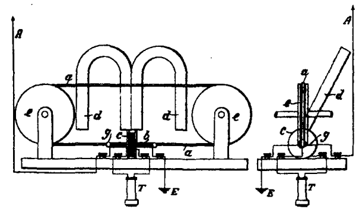
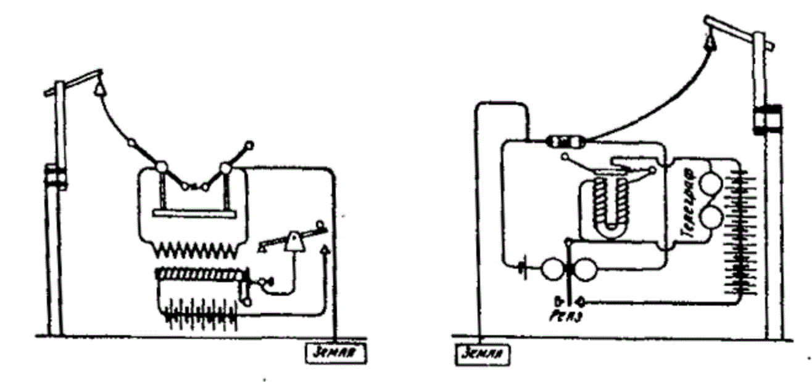

История беспроволочного телеграфа
Web-Quest
История радиотелеграфа в XX веке
Начало XX века
В начале XX века уже несколько десятков ученых во многих странах с увлечением занимались беспроволочным телеграфом. Однако наибольшие успехи по-прежнему были связаны с именем Маркони, который, несомненно, был одним из самых выдающихся радиотехников этого времени. После ряда опытов передачи на большие расстояния Маркони сделал поразительное открытие - оказалось, что выпуклость земного шара нисколько не мешает движению электромагнитных волн. Это подтолкнуло его к эксперименту по телеграфированию через океан. Уже в 1901 году состоялась первая в истории трансатлантическая радиопередача, во время которой помощник Маркони, Флеминг, передал с английской станции в Польдю кодом Морзе букву "S", а Маркони, находившийся на другом берегу Атлантического океана, на острове Ньюфаундленде, принял ее на расстоянии 1800 миль. Следующим важным моментом в усовершенствовании приемников стало создание новых волноуловителей (детекторов). Когерер Бранли сыграл важную роль в первые годы развития радиосвязи. Однако он был слишком капризным и сложным в обращении. Кроме того, его приходилось постоянно встряхивать для восстановления способности отзываться на очередной радиосигнал. Одной из центральных задач стало создание "самонастраивающегося" когерера. Первая попытка в этом направлении была сделана в 1899 году Поповым с телефоном. Вторая Маркони, сконструировавшего в начале XX века свой магнитный детектор.

а - бесконечная металлическая лента; b - первичная обмотка; dd - постоянные магниты; ее - ролики; g - стеклянная трубка, через которую проходит лента; А - воздушный привод; Е - земля; Т - телефон
Принцип действия
Принцип действия магнитного детектора основывался на явлении так называемого гистерезиса. Дело в том, что обычно железо намагничивается с некоторым опозданием во времени. Однако намагничивание можно усилить, если в момент воздействия внешнего магнитного поля вызвать заметное сотрясение молекул железа. Это можно сделать путем механического удара или коротким импульсом другого магнитного поля. Данное явление и было использовано Маркони. В его магнитном детекторе на два роликовых диска натягивалась бесконечная лента из мягкой железной проволоки, двигавшаяся со скоростью пять дюймов в секунду и проходившая под полюсами двух постоянных магнитов внутри небольшой стеклянной трубки. На эту трубку наматывались первичная и вторичная обмотки, причем первичная обмотка включалась в цепь антенны, а вторичная присоединялась к телефону.
Проходя под полюсами магнита, железная лента намагничивалась сначала в одном, а потом в противоположном направлении. Само перемагничивание происходило под средними сдвоенными одноименными полюсами, но не тотчас в момент прохождения под ними ленты, а несколько запаздывая (из-за упомянутого выше свойства железа).
Картина магнитных линий, исходивших из полюсов и замыкавшихся в железной проволоке, искажалась, и магнитные линии представлялись как бы увлекаемыми проволокой в сторону движения. Высокочастотное магнитное поле, образовавшееся внутри первичной обмотки во время прохождения принимаемого радиосигнала, мгновенно ослабляло явление гистерезиса в железной проволоке и производило в ней ударное перемагничивание. Конфигурация силовых линий резко изменялась, и они устанавливались в том положении, которое свойственно им при неподвижной проволоке. Это внезапное смещение силовых линий создавало мгновенный ток во вторичной обмотке, вызывавший звук в телефоне. Прибор не требовал встряхиваний и был всегда готов к приему очередного сигнала. В те же годы другими радиотехниками были предложены другие типы детекторов.
С этого времени началось бурное развитие радиотехники. В 1902 году, используя свой магнитный детектор, Маркони провел серию замечательных опытов на итальянском военном крейсере "Карло Альберто". Во время плавания из Италии в Англию и Россию он совершенно свободно вел прием на расстоянии 2000 км от Польдю, где находилась передающая станция. В ноябре того же 1902 года была устроена официальная радиосвязь между США и Англией. Президент Рузвельт и король Эдуард VIII обменялись приветственными радиограммами. А в октябре 1907 года фирма Маркони открыла для широкой публики первую в истории радиотелеграфную станцию, передающую сообщения из Европы в Америку. Интерес к этой новинке оказался огромным - в первый же день было передано 14 тысяч слов.
